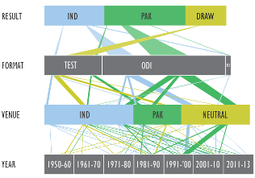
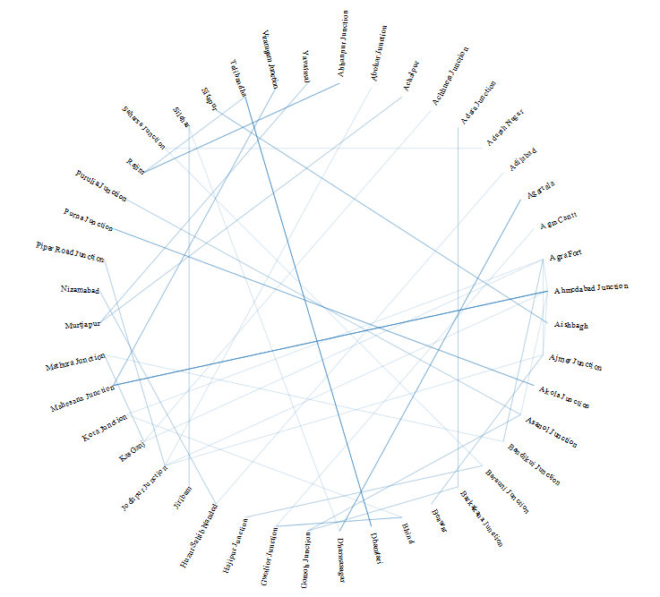

Information Visualization was a 5-week module in 3rd semester for students of Information and Interface Design at National Institute of Design, Bangalore. As a unanimous decision, we chose to work on 1 big project rather than multiple small projects. Sridhar Pabbisetty was invited as the guest lecturer for the first week. We were asked to choose a theme for our final visualization. I ended up picking “India vs Pakistan” theme for my visualization. In this project we learnt how to work from scratch - from searching datasets, sanitizing the data to making it interactive. This is the first cut of the visualization which is hosted on github. It still needs to go through a lot of refinement.
In the subsequent week, we had lectures related to classification systems and were asked to present concepts related to our understanding of Information taxanomies. Topic assigned to me was Principles of Categorization by Eleanor Rosch.
Paper: Principles of categorizationIn the coming week, each one of us was assigned Natures: Point of view articles. Anushka and I worked on this as a team. We were assigned "Design of Data Figures". This was quite helpful because it gave a clarity about which data figure would suit what kind of visualization.
Paper: Design of data figuresS Anand from Gramener conducted a quick workshop and walked us through a lot of his work assignments. By the end of it, he gave us huge datasets to work on and come up with a visualization in a short duration. Kenneth and I worked on this together and chose Indian Trains dataset to visualize(and hence, named ourselves as "I like Trains" team). We chose circos as the base for our visualization to show how Indian train stations are linked to each other.
Next was a 5 day workshop on geovisualization and GIS conducted by an alumni of IID, Arun Ganesh. The outline of the workshop can be found here. Many quick assignments were given which included creating a schematic map and uploading it to Wikipedia, making modifications/ contributing to Open Street Map project and familiarizing ourselves with tools like QGIS, Tilemill, Mapbox, JOSM,Github and Leaflet. This workshop was my personal favourite as it empowered our skillsets and the knowledge gained during this workshop was enormous which can add value in other projects as well.
I am a movie buff so wanted to gauge how many movie theatres were there in Bangalore City.
This was just an exploratory map of my hometown, Gulbarga. :)
{kind=link}
{kind=link}
{kind=link}
{kind=link}